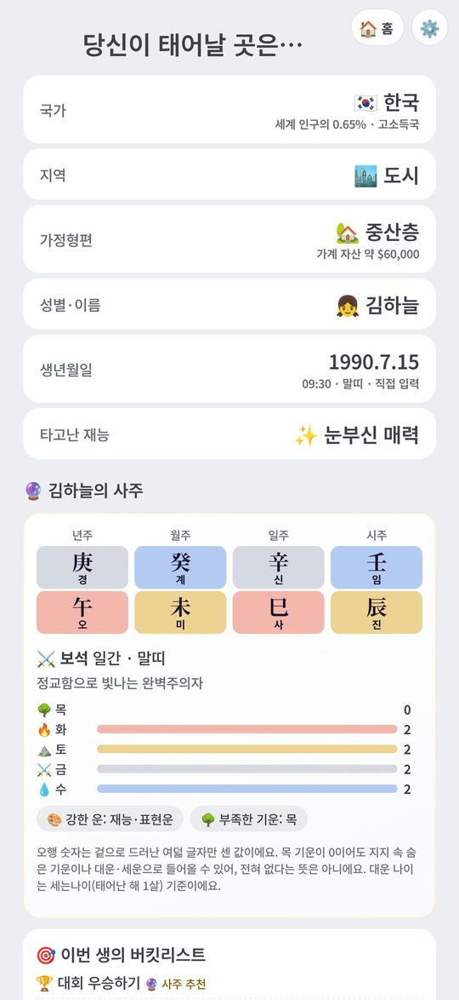
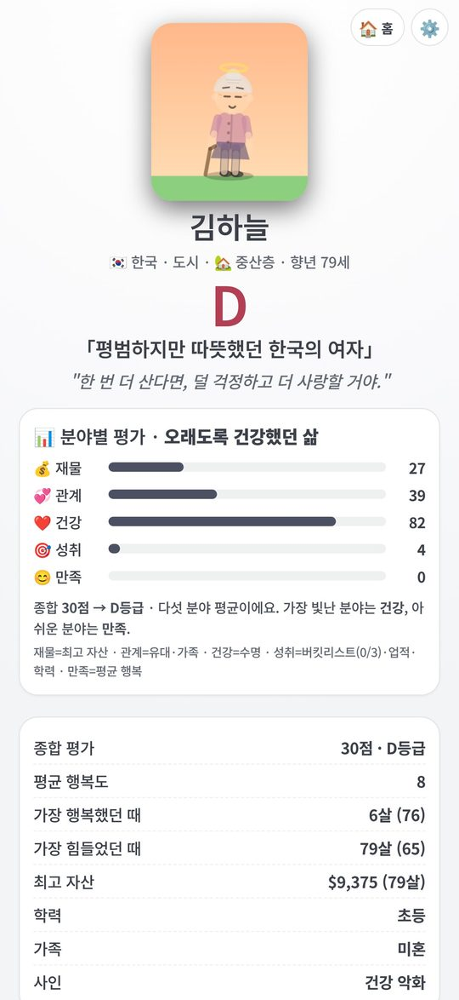
🌏프로젝트 80억 : 인생 게임
세계 인구 80억 명 가운데 한 사람으로 태어나, 한 해씩 나이를 먹으며 끝까지 살아 보는 시뮬레이션 게임이에요. 매번 다른 나라·가정·재능으로 태어나기 때문에 같은 인생은 없어요.
- 탄생 — 실제 나라별 인구 비율로 태어날 곳이 정해지고, 가정형편·지역·타고난 재능이 함께 정해져요. 생년월일을 넣으면 그 사주가 캐릭터의 시작 능력치와 10년 대운이 돼요.
- 한 해씩 살기 — 공부·운동·취미·일을 골라 능력치를 키워요. 학교 과목, 7개 외국어 회화(소리 듣기), 피아노 악보 읽기·화성 시험과 리듬 미니게임, 경제 수업과 실제 역사 수익률로 하는 투자까지 들어 있어요.
- 실제 세계사 — 1950~2026년 실제 사건이 그 시대를 사는 내 인생에 영향을 줘요.
- 인생의 갈림길 — 진학·취업·결혼·이사 같은 중요한 순간에는 직접 골라요. 선택에 따라 인생이 크게 달라져요.
- 버킷리스트 — 목표를 이루면 카르마 +10.
- 엔딩: 운명 vs 노력 — 사주가 예언한 삶과 실제로 살아 낸 삶을 나란히 비교하고, 등급·인생 요약·결정적 순간을 보여 줘요. 엔딩마다 카르마 +30.
편하게 하는 기능
- 육성 방침 + 자동 진행 — 방침을 고르면 ▶ 자동 · ⏩ 빠르게 · 5년 건너뛰기로 알아서 진행해요. 중요한 선택에서는 멈추고, 진행 중 화면을 누르면 바로 정지해요.
- 저장 — 💾 중간 저장, 🏠 저장하고 나가기. 이어서 할 수 있어요.
- 10살마다 광고 휴식 — 원하면 광고를 보고 카르마 +20.
카르마로 쓰는 게임 아이템: 다시 태어나기 15 · 기적 40 · 운명 조작 팩 30(태어날 가정형편·재능 직접 선택) · 갈림길 미리 보기 3
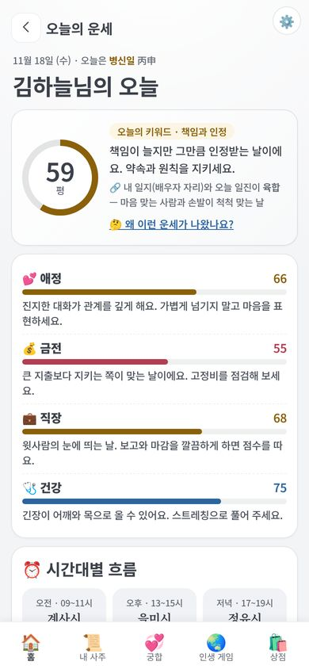
☀️오늘의 운세
내 사주와 오늘의 일진(예: 을미일)을 맞춰 본 하루 운세예요. 날짜가 바뀌면 새 운세가 나와요.
- 총운 점수와 등급(예: 63점 · 평)과 오늘의 한 줄 조언
- 분야별 점수 — 애정 · 금전 · 직장 · 건강, 분야마다 짧은 풀이
- 시간대별 흐름 — 오전·오후·저녁에 어떤 기운인지
- 오늘의 행운 — 색 · 숫자 · 방향
- 「왜 이런 운세가 나왔나요?」 — 일간과 오늘 일진의 관계 등 계산 근거
- 공유 카드 — 점수·행운·오늘의 타로·오늘의 명언을 이미지 한 장으로 만들어 카카오톡·SNS로 보낼 수 있어요. 이름은 기본으로 숨기고(넣어도 첫 글자만), 생년월일은 넣지 않아요.
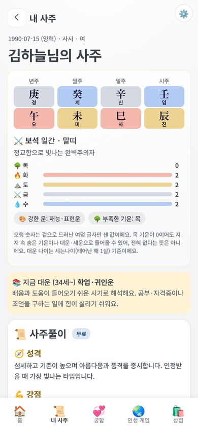
📜내 사주 풀이
생년월일과 태어난 시간(모르면 생략 가능)으로 사주팔자를 세우고 풀이해요. 양력·음력 모두 넣을 수 있어요.
- 사주팔자 명식 — 연·월·일·시 네 기둥의 천간·지지를 오행 색으로 표시
- 보석 일간과 띠 — 나를 상징하는 일간을 쉽게 풀어 설명
- 오행 분포 — 목·화·토·금·수가 얼마나 있는지, 강한 기운과 부족한 기운
- 지금 대운 — 10년 단위로 바뀌는 큰 흐름과 지금 내가 있는 구간
- 사주풀이 — 타고난 성격, 강점·약점, 연애, 재물, 건강 성향, 개운법
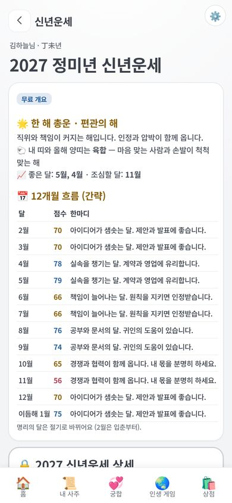
🧧2027 신년운세 (정미년)
다가오는 한 해를 미리 보는 운세예요. 11월부터는 다음 해 운세로 바뀌어요.
- 무료 개요 — 한 해 총운과 한 줄 요약, 좋은 달, 12달 점수 흐름
- 상세 — 한 해 총점·키워드, 6개 분야별 기회·주의·실천, 12개월 상세(달마다 일·재물·사람·건강·좋은 날), 10년 대운, 분기 전략, 관계, 개운
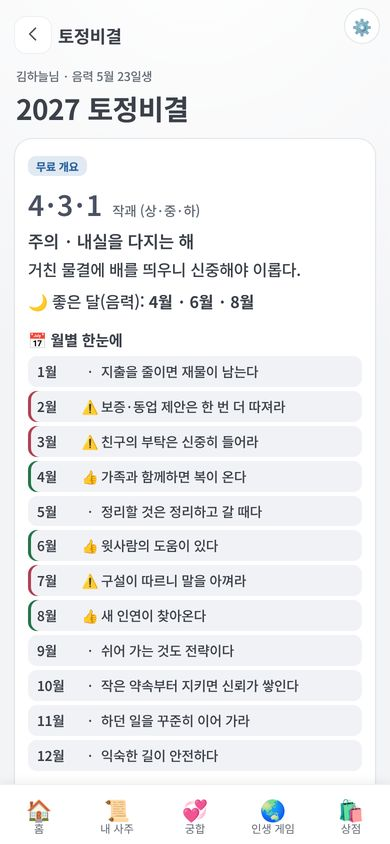
🏮토정비결
조선 시대 이지함 선생의 토정비결 방식으로 음력 생년월일에서 상·중·하괘(예: 4·3·1)를 뽑아 한 해의 신수를 봐요.
- 무료 — 작괘 결과, 괘의 뜻, 총평, 좋은 달, 월별 한 줄 운세
- 상세 — 상·중·하괘 풀이, 계절 흐름, 월별 상세(신수 풀이·달의 기운·일/재물/사람/건강·좋은 날·행운 색·실천), 길한 달 활용법
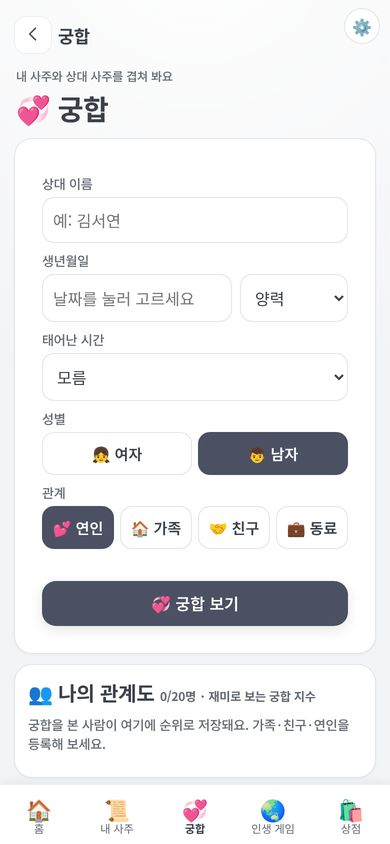
💞궁합 · 나의 관계도
상대의 이름(별명)·생년월일·성별과 관계(연인 · 가족 · 친구 · 동료)를 넣으면 두 사람의 궁합을 봐요.
- 궁합 지수와 한눈에 보는 관계 요약
- 나의 관계도 — 최대 20명까지 등록해 한 화면에서 궁합 지수를 비교
- 상세 — 오행·일간·띠·배우자 자리, MBTI 관계 궁합, 연인이면 연애 성향(바람기) 비교, 관계 유형별 조심할 점·개선할 점, 대화 예시, 월별 흐름
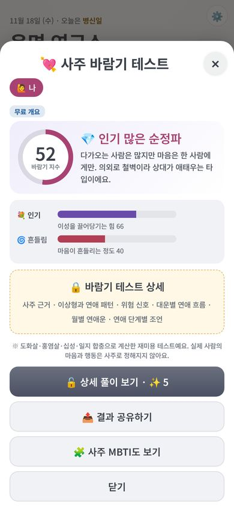
💘사주 바람기 테스트
사주에 있는 도화살·홍염살 같은 연애 기질을 재미있게 풀어 바람기 지수와 유형(예: 인기 많은 순정파)을 알려 줘요.
- 무료 — 바람기 지수, 연애 유형, 인기·흔들림 정도
- 상세 — 사주 근거, 이상형과 연애 패턴, 위험 신호, 대운별 연애 흐름, 월별 연애운, 연애 단계별 조언
- 결과를 친구에게 공유할 수 있어요.
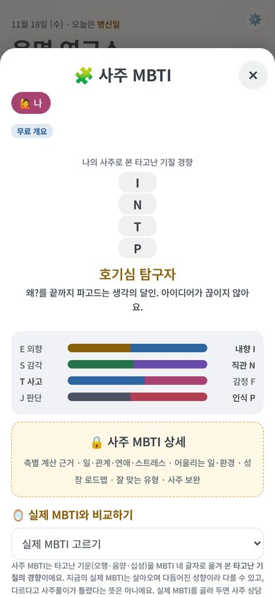
🧩사주로 보는 MBTI
오행과 십성의 균형으로 타고난 기질을 MBTI 4글자로 바꿔 보여 줘요(예: INTP 호기심 탐구자). 실제 MBTI를 고르면 둘을 비교해 줘요.
- 무료 — 사주 MBTI 유형과 4개 축(E/I·S/N·T/F·J/P) 막대
- 상세 — 축별 계산 근거, 일·관계·연애·스트레스, 어울리는 일·환경, 성장 로드맵, 잘 맞는 유형, 사주로 보완하는 법
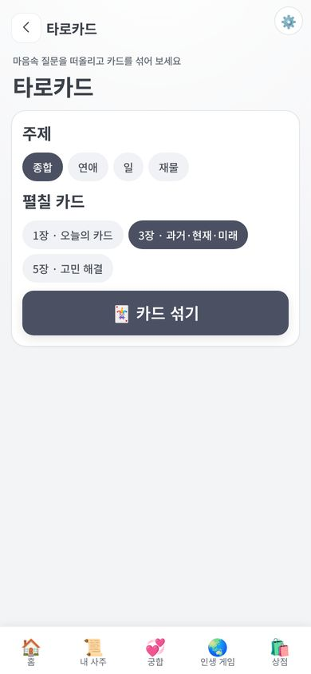
🃏타로카드
메이저·마이너 78장 전체로 보는 타로예요. 주제(종합 · 연애 · 일 · 재물)를 고르고, 질문을 마음에 담은 채 카드를 섞어 직접 골라요.
- 1장 · 오늘의 카드 — 지금 필요한 메시지 한 장
- 3장 · 과거 → 현재 → 미래 — 흐름과 카드끼리의 관계
- 5장 · 고민 해결 — 상황 · 장애물 · 숨은 원인 · 조언 · 결과
- 상세 리딩 — 그림·숫자·원소 읽기, 주제별 풀이, 시기, 내 사주와의 연결, 실천 계획
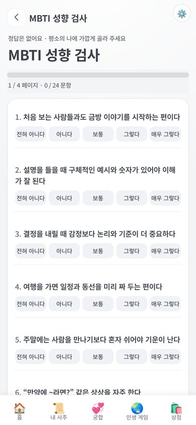
📝MBTI 성향 검사
24문항 설문에 「전혀 아니다 ~ 매우 그렇다」로 답하면 내 성향 유형과 4개 축 점수를 알려 줘요.
- 검사 결과와 사주로 보는 MBTI를 나란히 비교 — 타고난 기질과 지금의 나는 얼마나 같을까요?
- 결과는 기록 보관함에 남고, 궁합의 MBTI 관계 궁합에도 쓰여요.
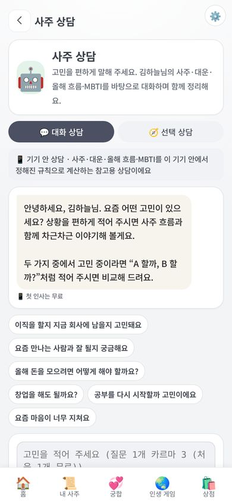
🧭사주 상담
고민을 편하게 적으면 내 사주·대운·올해 흐름·좋은 달·MBTI를 바탕으로 상담사처럼 답하고 다음 질문을 이어 가요.
- 💬 대화 상담 — 이직·연애·창업 같은 고민을 자유롭게. 예시 질문을 눌러 시작할 수도 있어요.
- 🧭 선택 상담 — 「A 회사 vs B 회사」처럼 선택지를 2~3개 적으면 선택지별로 자세히 비교해 줘요. 내 생년월일로 태어난 가상 인물이 선택지마다 끝까지 살아 본 결과(인생 게임 엔진)도 참고로 보여 줘요.
- 상담 기록은 프로필별로 이 기기에만 저장돼요.
📑종합 사주 리포트 (PDF)
내 정보만으로 만드는 상담 보고서예요. 명식, 한 해 흐름, 분야별·월별 상담, 성향, 90일 실천 계획을 한 권으로 묶어 PDF로 저장해요(궁합은 선택 부록). 만들기 전에 목차와 예시를 먼저 보여 주고, 같은 프로필·같은 연도는 다시 내려받기가 무료예요. 한 번도 만들지 못했다면 카르마를 돌려받을 수 있어요.
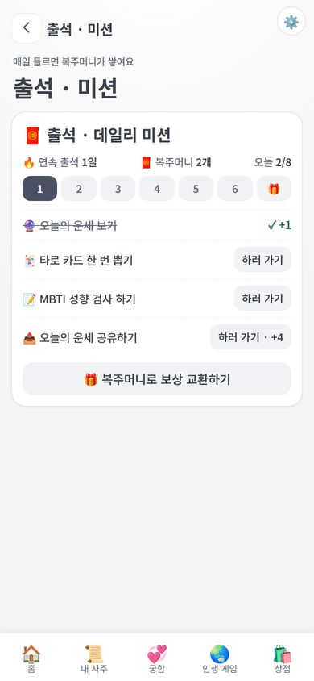
🧧출석 · 데일리 미션
매일 들러 출석하고 간단한 미션을 하면 복주머니가 쌓여요.
- 연속 출석 — 1~7일 출석판, 날마다 복주머니
- 오늘의 미션 — 오늘의 운세 보기, 타로 카드 한 번 뽑기, MBTI 성향 검사 하기, 오늘의 운세 공유하기
- 복주머니 교환 — 복주머니 3개로 카르마 +10 등 보상으로 바꿔요(더보기 › 복주머니 교환).
✨카르마 — 운명 연구소의 하나뿐인 재화
상세 풀이·타로 상세·상담·게임 아이템은 모두 카르마로 열어요. 사주풀이, 오늘의 운세, 매일 타로 1장, 각 서비스의 개요는 언제나 무료예요.
| 모으는 방법 | 카르마 |
|---|---|
| 처음 시작할 때 | +100 |
| 카카오·구글로 처음 로그인 (계정당 1번) | +100 |
| 광고 보기 (3분 간격 · 하루 6번) | +20 |
| 인생 게임 엔딩 (한 판 끝까지) | +30 |
| 인생 게임 중 10살마다 광고 휴식 (원할 때만) | +20 |
| 버킷리스트 달성 (게임) | +10 |
| 복주머니 3개 교환 | +10 |
| 이벤트 기간 무상 지급 | 이벤트마다 |
| 쓰는 곳 | 카르마 |
|---|---|
| 신년운세 상세 | 15 |
| 토정비결 상세 · 궁합 상세(상대마다) | 10 |
| 바람기 테스트 상세 · 사주 MBTI 상세 | 5 |
| 타로 상세 리딩 1장 / 3장 / 5장 | 5 / 10 / 15 |
| 사주 상담 질문 1개 (처음 1개 무료) | 3 |
| 종합 사주 리포트 PDF | 40 |
| 게임 아이템: 다시 태어나기 · 기적 · 운명 조작 팩 · 갈림길 미리 보기 | 15 · 40 · 30 · 3 |
👤계정 · 개인정보
- 로그인하지 않아도 모든 기능을 쓸 수 있어요.
- 이름(별명)·생년월일·태어난 시간·성별, 궁합 상대, 상담·검사 기록, 게임 저장은 현재 기기·브라우저에만 저장되고 개발자 서버로 보내지 않아요.
- 카카오·구글 로그인(선택)을 하면 카르마 잔액·살아 본 인생 수·연 콘텐츠 목록만 계정에 저장돼 다른 기기에서도 이어져요. 탈퇴하면 서버 기록은 바로 지워져요. (안드로이드 앱·웹 지원)
- ⚙️ 설정에서 화면 모드(라이트·다크·휴대폰 설정), 배경음악·효과음, 내 정보 수정, 기록 지우기를 할 수 있어요. 📂 내 기록 보관함에서 운세·타로·검사·상담·궁합·게임 기록을 모아 봐요.
❓자주 묻는 질문
태어난 시간을 모르면 어떻게 하나요?
「모름」으로 두면 시주(태어난 시간 기둥)를 빼고 연·월·일 세 기둥으로 풀이해요. 대부분의 기능은 그대로 쓸 수 있어요.
앱을 지우거나 휴대폰을 바꾸면 어떻게 되나요?
정보와 기록은 기기에만 저장돼서 앱을 지우거나 기기를 바꾸면 복원되지 않을 수 있어요. 카카오·구글로 로그인해 두면 카르마 잔액과 연 콘텐츠 목록은 새 기기에서도 이어져요.
운세 결과를 믿어도 되나요?
전통 명리를 바탕으로 한 참고·재미용 풀이예요. 중요한 결정은 여러 정보를 함께 살펴보고 스스로 판단해 주세요.
웹과 앱은 무엇이 다른가요?
기능은 같아요. 앱에서는 실제 광고 보상, 알림, 공유 시트, 카르마 구매(안드로이드)를 쓸 수 있어요. 웹은 설치 없이 바로 해 볼 수 있어요.
안드로이드 뒤로가기 버튼은 어떻게 동작하나요?
팝업이 열려 있으면 닫고, 아니면 이전 화면으로 돌아가요. 홈 화면에서 한 번 더 누르면 앱이 종료돼요. 인생 게임 중에는 저장하고 나갈지 물어봐요.
문의는 어디로 하나요?
support.um09@gmail.com으로 보내 주세요. 비공개 테스트 참여 신청도 같은 주소로 받아요.
지금 바로 시작해 보세요
정식 출시 전 비공개 테스트 중이라 Google Play 앱은 테스터로 등록된 계정에서만 설치할 수 있어요.